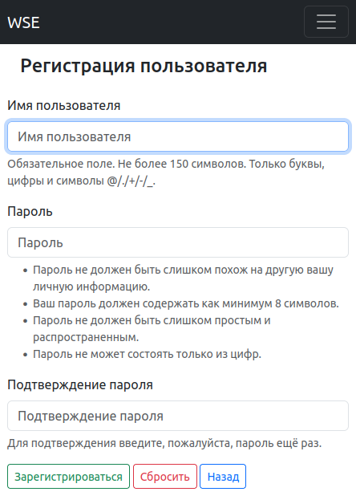
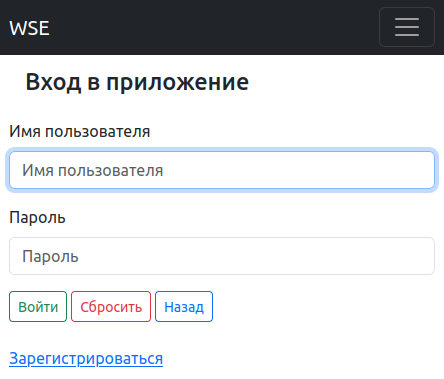

Управление пользователем приложения¶
Регистрация пользователя¶
Добавляемые пользователем слова к изучению сохраняются в словарь пользователя. Чтоб связать формируемый словарь с пользователем, необходима регистрация пользователя.
Для регистрации потребуется только логин и пароль. В связи с этим, отсутствует возможность восстановления доступа при забытом логине и (или) пароле пользователя.
Навигация по приложению осуществляется через панель меню в верхней части экрана. Воспользуйтесь ей и перейдите в раздел “Регистрация”. На обновленной странице заполните форму регистрации.
Для завершения регистрации нажмите кнопку “Зарегистрироваться”, после чего будут проверены введенные вами данные на наличие свободного логина и на соответствие требованиям безопасности введенных вами данных.
Если регистрация прошла успешно и вы видите сообщение об этом, это значит, что вы внимательно ознакомились с требованиями безопасности и желаемый вами логин свободен. В ином случае, обратите внимание на сообщение приложения.
После регистрации вы будете перенаправлены на страницу входа в приложение.

Рисунок: Страница с формой регистрации.¶
Вход пользователя в приложение¶
Воспользуйтесь панелью меню в верхней части экрана и перейдите в раздел “Вход”.
После ввода логина и пароля нажмите на кнопку “Вход”.
Если вы зарегистрированы и ввели без ошибок, логи и пароль, то приложение отметит вас как пользователя вошедшего в приложение и перенаправит на “Домашнюю страницу”. В ином случае, обратите внимание на сообщение приложения.

Рисунок: Страница с формой входа в приложение.¶
Выход из приложения¶
Воспользуйтесь панелью меню в верхней части экрана и нажмите “Выход”.
После выхода из приложения будет загружена страница входа в приложение.
Удаление пользователя¶
Warning
Удаленного, из этого приложения, пользователя невозможно восстановить.
С удалением пользователя удалятся все его достижения.
Но, приобретенные знания - остаются у пользователя!
Воспользуйтесь панелью меню в верхней части экрана и перейдите в “Личный кабинет”.
В нижнем ряду кнопок нажмите кнопку “Удалить”. Вы будите перенаправлены на страницу подтверждения удаления пользователя. Если вы уверены, что хотите удалить пользователя, нажмите кнопку “Удалить”, в ином случае, кнопку “Назад”.
После удаления пользователя вы будите перенаправлены на страницу входа в приложение.